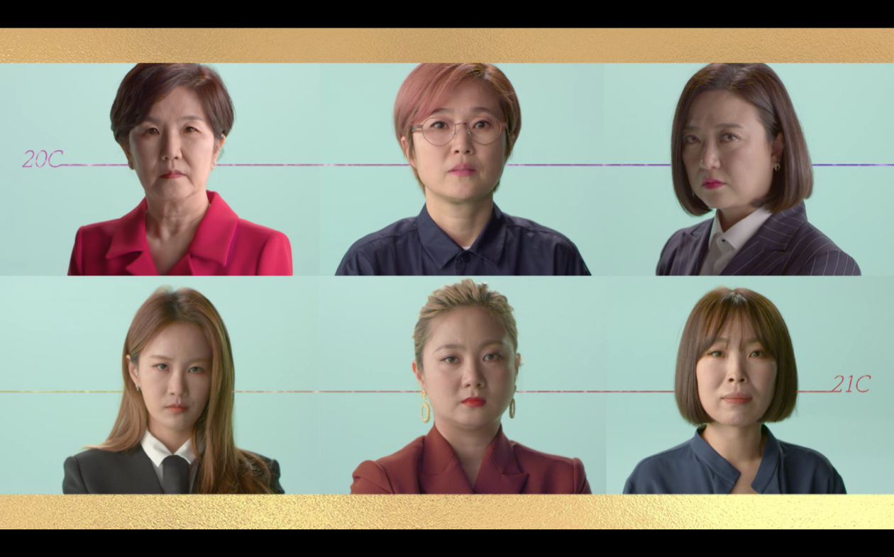

KBS 공채 희극인 6인의 솔직한 인터뷰와 과거의 KBS 개그 프로그램들을 돌아보면서 그들이 느낀 좌절과 어떻게 판을 바꾸기 위해 노력했는지를 담은 다큐멘터리이다. 2020년 6월 18일 밤 10시 KBS 1TV 다큐 인사이트에서 방영했다.
이성미, 송은이, 김숙, 박나래, 김지민, 오나미, 김상미 PD
"당시 개그우먼들한테는 크게 기대감이 없었던 것 같아요. 연기를 세게 하면 비호감이라고 그러니까 주된 역할을 맡기보다는 치고 빠진다고 하죠. 극의 진행을 원활하게 하는, 깔아주는 역할을 많이 맡았어요." 김상미 KBS PD
“시청자들이 원했던 것인지? 방송국에서 원했던 것인지? 잘 모르겠지만 그 때 당시에는 남자들끼리 프로그램이 뜨니까 우리도 남자들끼리 해볼까 해볼까 하면서 남자들끼리 뭉쳐서 하는 프로그램들이 꽤 많아졌어요. 그러다보니 개그우먼들이 필요 없어지는 지경까지 간 거죠.“ 이성미
"시대를 잘 만나서, 시대가 바뀌어서 아주 물을 만났다라는 게 너무너무 좋은 칭찬이기는 하지만 그걸 계속 얘기함으로서 시대가 바뀌었다고 생각하거든요." 김숙